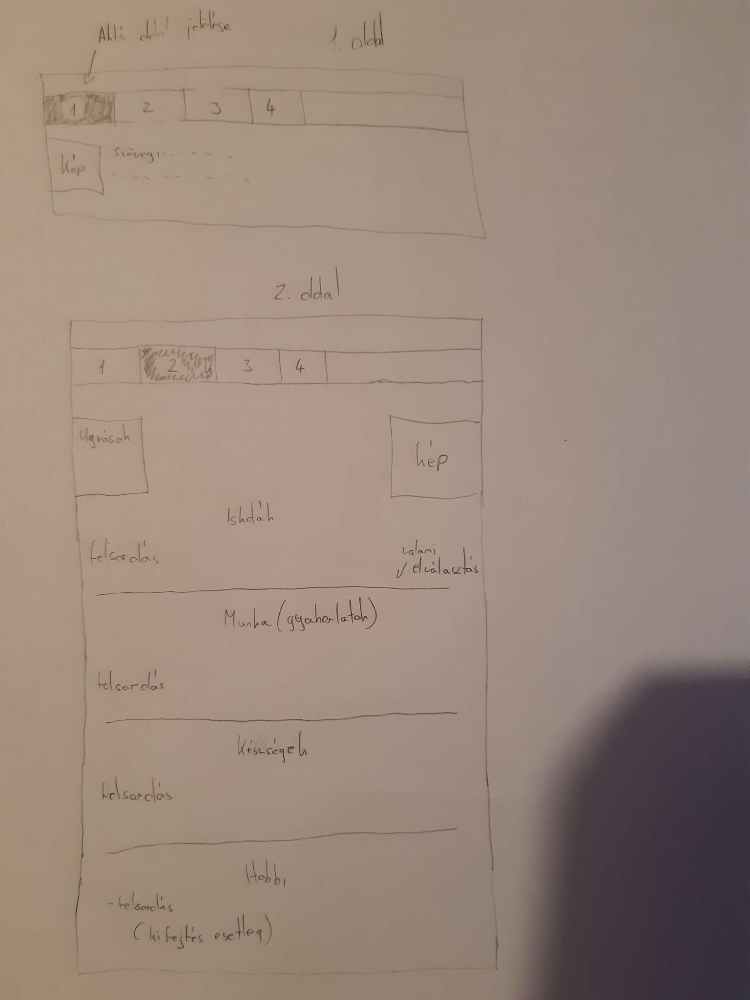
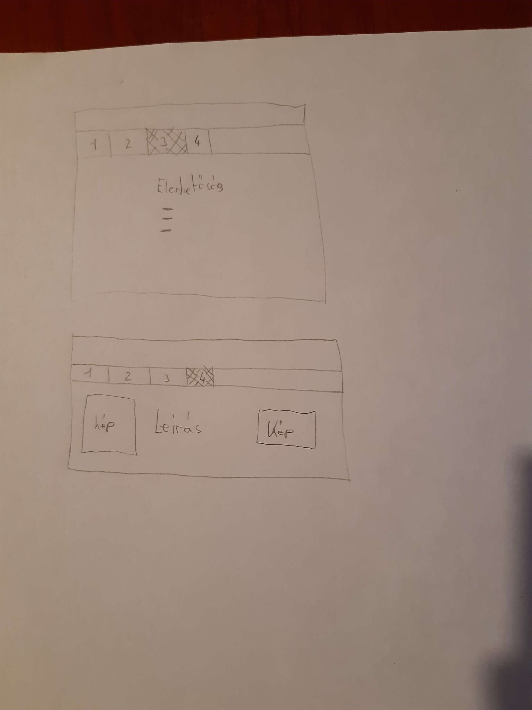

Tervek:
Kezdetben szerencsére mindent megtudtam valósítani a terveimből, majd amikor menüsáv elkészítésén kezdtem dolgozni szembesültem azzal,
hogy az aktív gomb megcsinálás nehezebb, mint gondoltam. Miközben azon dolgoztam, hogy jól működjön támadt egy ötletem, ami az volt,
hogy inkább a kurzorra reagáljanak a gombok. Ezt elég hamar sikerült megoldani. A második oldalt sikeresen megtudtam valósítani a terveim alapján.
Ahogy a 3. oldal következett ott egy kis fejtörést okozott, hogy mivel töltöm ki az oldalt, mert mégse hagyhatom üresen.
Végül az utolsó lap, mint itt is látható sikeresen kivitelezni tudtam az elképzeléseimet.
Források:
w3schools
Az oldal tanulmányozásával sikerült egy kissé elmélyítenem a tudásom ebben a témában.
RGB kódok
Az oldal segítségével választottam ki a színeket.